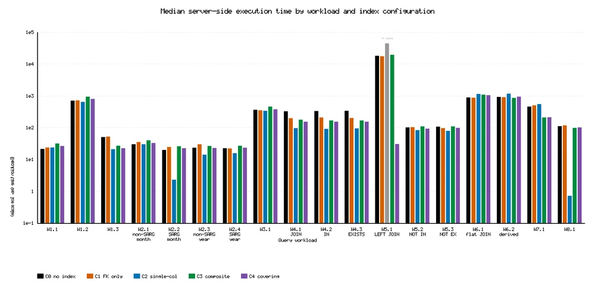
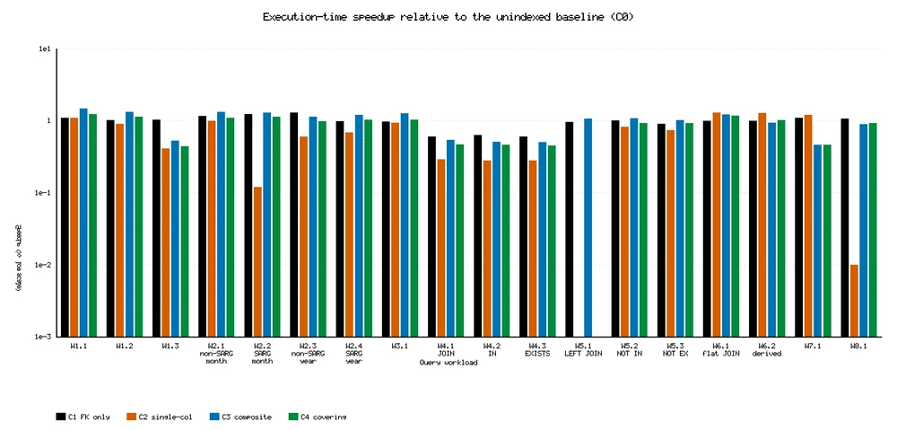
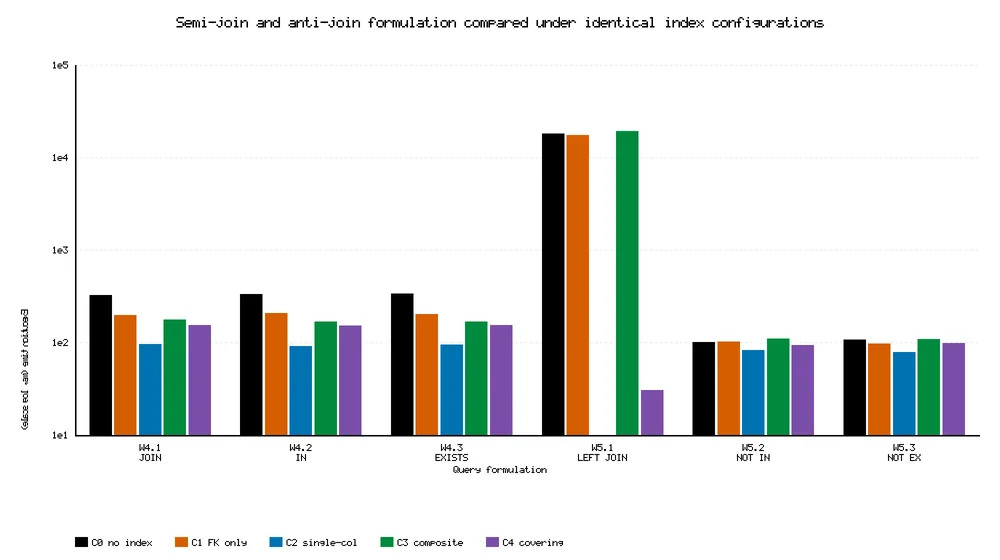
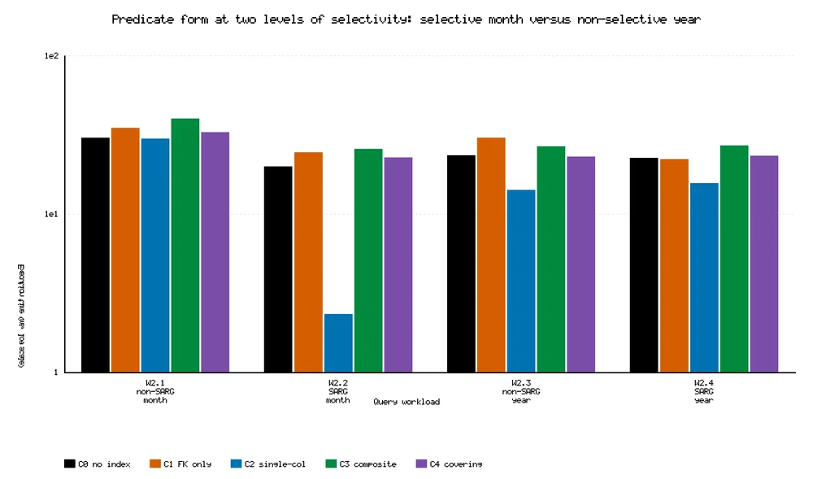

Olist SQL Efficiency
Python · MySQL
Penelitian performa query SQL pada dataset Olist Brazil: 5 konfigurasi indeks × 18 query di atas 9 tabel dan 569.774 baris. Terbit di Information Technology International Journal.
github.com/Zierch/olist-sql-efficiency


